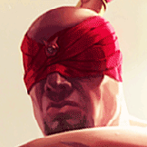
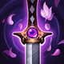
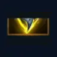
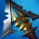
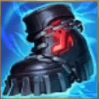
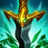

起手裝備
 長劍
長劍提高前期技能與普攻傷害，適合高頻換血。

Lee Sin · 高機動／神龍擺尾分割型物理鬥士
不要只想 Q 到後排就飛。先用技能穿插普攻回能量，等對手關鍵控制交掉後再進；最有價值的團戰通常是把敵方核心踢回我方，或把前排踢穿後排造成連鎖擊退。
本站當時評級理由：李星在 ARAM 有極高的短距離機動、護盾續戰與神龍擺尾的團戰位移價值。7.2 將爆發型傷害往鬥士玩法調整，7.2b 又強化二技護盾與全能吸血，因此現在比純刺客更適合持續進退與踢回關鍵目標。
近期官方未列李星標準 ARAM 專屬百分比修正，本站維持 100%／100%；不套用舊 Hextech／AAA ARAM 專屬承傷數值。7.2 重整 1、3 技與大絕傷害，7.2b 二技護盾 80/140/200/260→100/160/220/280、全能吸血 16/24/32/40%→20/30/40/50%。
提高前期技能與普攻傷害，適合高頻換血。

移速與穿甲讓李星更容易找側角與追擊。

技能後普攻頻繁，咒刃、生命與技能加速都很適合鬥士型李星。

中後期補穿甲並讓技能命中後更容易黏住目標。

延後物理爆發，擊殺後回復能配合二技吸血持續作戰。

後期進場踢核心失誤時保留第二次作戰機會。
補續航，配合二技全能吸血提高長團容錯。

三級鞋提高近戰衝陣時的承傷能力。

技能與普攻交錯能快速疊滿，長團最穩。

持續近戰提高輸出收益。

對高生命前排保持傷害。

改善被動兩下普攻的回能與連招流暢度。

Q 二段、W 位移都能穩定觸發。

保留最可靠的進退與關鍵技能銜接；雪球戰車進場後仍可用閃現修正位置。

雪球命中後可等待隊友跟上再進場，讓近戰英雄在單線拉扯中擁有穩定的接戰與追擊角度。
1 技 > 2 技 > 3 技
開局三個基礎技能各 1 級，之後主 1、次 2；大絕能點就點。7.2b 二技增強後，次升二技能更早取得護盾與吸血收益。
先以 1 技消耗、技能後普攻回能量，不要每次命中都立刻二段飛入。二技留給撤退、護盾或真正的進場。
兩到三件裝後開始主動找側角。先觀察敵方核心與前排位置，能把核心踢回隊友就優先；若只能踢前排，盡量讓前排撞到後排。
你的價值從單殺轉向位移與保護。守護天使在時可以做更深的第一波，但大絕若能打斷刺客或保護我方射手，也比硬切後排更有效。
 黑色切割者
黑色切割者替換妖夢或席利妲，快速疊減甲幫整隊物理輸出。

巨蛇鋒牙替換一件輸出裝，降低護盾陣容容錯。
 雅瑪蘭守護像
雅瑪蘭守護像替換守護天使，疊雙抗提高二次進場能力。
獨立歷史資料：7.2b 分類評級。7.3a 僅有部分增幅公告欄位校正，英雄分類適配與出裝未因此全面重評；不套用到標準 ARAM。
看遊戲卡片下方分類 → 點相同分類 → 看左側 S+／S／A。
一、二技能都能產生位移，身法增幅能在連招中反覆觸發。
整套玩法依賴技能重施與能量管理，技能循環直接決定操作上限。
連續衝刺後的穿透、防禦與追加傷害能提高深切後收益。
被動要求技能後穿插普攻回能量，技能後普攻型增幅非常契合。
普攻縮技能、技能普攻循環與施放大絕無敵都能直接提高連段。
大絕踢飛是關鍵控制，但觸發頻率不如純控制坦克。
v80.13.0 ARAM A 第四批：李星同步 7.2 技能傷害結構重整與 7.2b 二技護盾／全能吸血增強；標準 ARAM 未混入 AAA ARAM 專屬承傷。｜v93 7.2d 標準 ARAM 全量校正：已複核 Tier、標準 ARAM 模式修正、7.2c／7.2d 英雄與道具、現行符文名稱及雪球戰車；無額外異動者沿用已驗證配置。